| 名医が図解! 肩こり・首の痛みは解消できる! (1) 首・肩の構造とはたらき (impress QuickBooks) | |
| 手塚 正樹 | |
| (2015) | |
Contents
【さらにくわしく知るためのドクターズ アドバイス】
首と周辺の構造とはたらき
多くの人にとって身近な症状"首の痛みや肩こり"。
それは私たちのからだの骨格や筋肉の構造上、宿命ともいえる悩みです。本書では、首の痛みや肩こりを起こしやすいからだの構造を中心に解説していきます。
現代では首や肩、背中の痛みに悩まされている人が多くいます。これは人類の直立歩行というほかの動物にはない進化の結果として背負った"人類の宿命"といえるでしょう。
私たち人類の祖先は、ライオンや象といったほかの脊 椎 動物と同様に4足歩行をしていました。進化の過程で、2足歩行に移行することによって大きく重い脳を発達させ、それを支えるための骨格や筋肉の構造もつくられました。
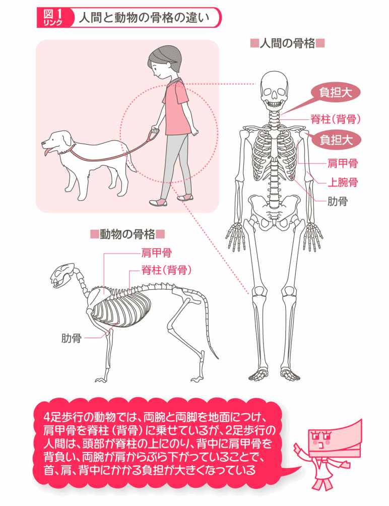
4足歩行の場合は、両腕と両脚を地面につけることで、肩 甲 骨 が脊 柱 （背骨）に乗った構造をしています。人間は、2本の足で直立するようになったので重い両腕を肩からぶら下げ、肩甲骨を背負って持ち上げなくてはならなくなったのです。
しかも肩甲骨は、鎖 骨 や上 腕 骨 などの関節とは、つながっていますが、上体（胴体）とはしっかりつながっていないため、左右の腕と肩甲骨の重みを支えるのは、肩の筋肉が頼りなのです。
さらに直立することで発達した重い頭部（約6～7kg）を、首や肩で支えなければなければならないので、その部分にかかる負担は大きいのです。
「肩こりは、直立歩行をする人類の宿命」といいましたが、それに加えて、私たちは肩こりを引き起こしやすい生活環境のなかで暮らしています。
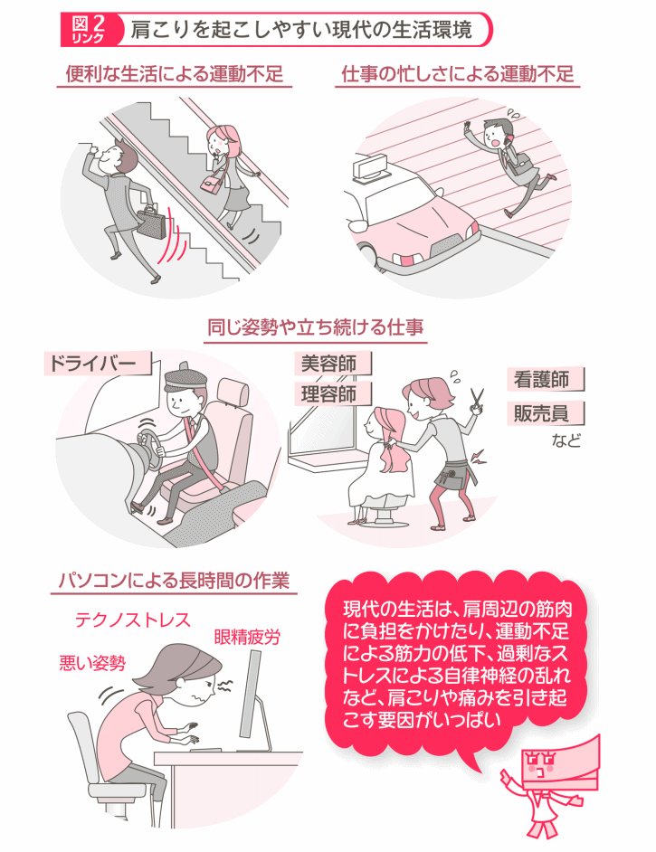
肩こりの原因については、第2巻で詳しくお話ししますが、簡単にいうと、肩がこるというのは、首や肩、背中の筋肉の緊張状態が続いて血行障害を招き、その結果、筋肉疲労を起こした状態です。
筋肉の緊張状態が続くと肩こりになりやすいのです。例えば、同じ姿勢をとり続けたり、悪い姿勢でいると筋肉の緊張状態が続くことになります。
デスクワーク中心でずっと座っている人、タクシーやトラックなどの運転手、美容師など、同じ姿勢を長時間続けている人は、首や肩の筋肉に負担がかかり肩こりに悩む人が多いものです。同じ姿勢をとり続けることが肩こりを招くというのは座り仕事でも、立ち仕事でも同じです。逆に腕や肩を適度に動かす生活をしている人は、肩こりになりにくいのです。
良くない姿勢のまま座っているだけでも、首や肩、背中周辺の筋肉に負担をかけています。とくにパソコンでの作業は、同じ姿勢をとり続けるうえに、画面を凝視するために起こる眼 精 疲 労 、複雑な操作や情報処理作業からくるテクノストレスなどが加わって非常に肩こりを起こしやすい状態です。パソコン作業をよくする人なら、誰でも作業後の肩から背中、首、腕にかけての、からだが固まってしまったような不快感を経験したことがあるのではないでしょうか。
そして、運動不足も肩こりの原因です。便利な家電製品の進歩や、交通機関の整備、駅などのエレベーターやエスカレーターの普及によって、昔に比べてからだを動かす機会は減っています。まめにからだを動かしたり、筋力をつけることは肩こりの予防につながります。
厚生労働省「平成22年国民生活基礎調査」の「気になる症状」についての調査では、肩こりを訴える人が男性では1,000人中60.4人、腰痛に次いで第2位でした。
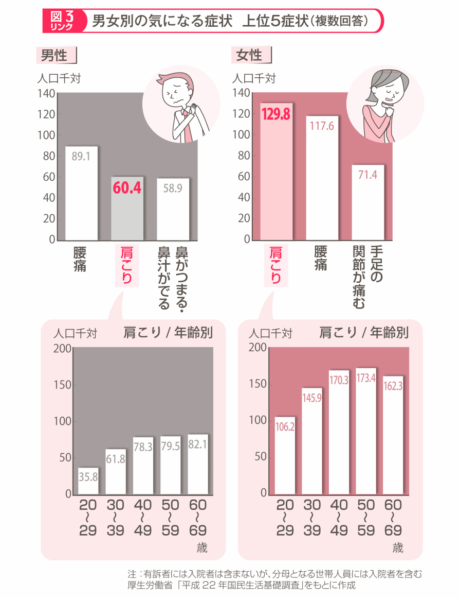
一方、女性では1,000人中129.8人で第1位でした。また、年齢別では男性が30代から多くなり、高齢になるほど増えます。女性は20代から1割以上の人が肩こりの自覚症状を訴えています。
このように多くの人にとって身近な肩こり。しかし"肩こり"といってもその症状はさまざまです。人によってその部位は「肩」にとどまらず、首や背中にも及びますし、症状はこわばり、痛み、張り、しびれ、重たい感じなど実にさまざまです。
医学的に"肩こり"は "筋肉疲労や血行障害による首、肩、背中の筋肉の緊張によって起こる不快感、鈍痛、しびれ、だるさ、違和感"を指し、こうした状態を総称して「頸 肩 腕 症 候 群 」といいます。
首や肩、背中のこりや痛み、不快感の多くは頸肩腕症候群ですが、まれにこりや痛み、しびれなどの影に骨や筋肉、内臓などの病気が潜んでいることがあります。
ですが、肩こりを理由に整形外科などの医療機関に受診する人は決して多くありません。
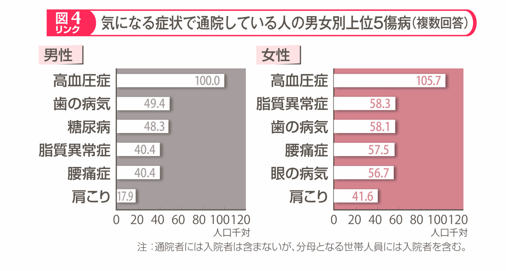
首や肩、背中に気になる症状があるときには、第5巻で紹介する「自分でできる肩こり解消法」を行ってみて、それでも症状が続くときには整形外科を受診してみましょう。
まとめ
肩こりは直立歩行する"人類の宿命"！
■首、肩、背中のこりや痛みは、直立して2足歩行する人類の宿命
■重い頭部や腕、肩甲骨を首や肩、背中の筋肉だけで支えていることが肩こりの原因のひとつ
■肩こりは、男女とも「気になっている症状」の上位を占めている
■肩こりの影に重大な病気が隠れていることもある
さらにくわしく知るためのドクターズ アドバイス
東京都済生会中央病院
整形外科 脊椎外科担当部長 手塚正樹
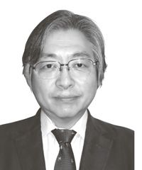
首や肩の不快感の多くは、周辺の筋肉の緊張状態が原因となって起こっていますが、なかには、それ以外の部位の病気が原因になっていることもあります。ここでは、命に関わる重大な病気が原因となっているケースを取り上げてみましょう。
階段を上っている最中など、からだを動かしているときに肩が痛む場合は、「 ＊ 心筋梗塞 」や「 ＊ 狭心症 」といった心臓の病気が、痛みの原因になっている可能性があります。
これは、心臓から起こる痛みが肩に放散する ためで、多くの場合、左肩にあらわれます。
首や肩の痛みに伴って手足のしびれやマヒがあるときには、「頸 椎 椎 間 板 ヘルニア」や「変 形 性 頸 椎 症 」、「後 縦 靱 帯 骨 化 症 」などの頸椎の病気がある可能性があります。
頸椎の異常がある場所によって、痛みが首にあらわれたり、肩甲骨周辺に出たりします。
肩こりに加えて手のしびれがあらわれる病気には、「胸 郭 出 口 症 候 群 」があります。悪い姿勢をとり続けるなどして、鎖 骨 と肋 骨 の間を通っている動脈や神経が圧迫されて起きる病気です。
胸郭出口症候群を発症する人は多くありませんが、建設作業や内装工事など、腕を高く上げた姿勢で作業をすることが多い職業の人や、なで肩の女性に起きやすいといわれています。
肺や膵 臓 、胆 のうなどの内臓の病気の症状のひとつとして肩に痛みが出ることがあります。痛む場所がはっきりしない、押しても痛くないという特徴があります。
がんや感染症などの、時間の経過とともに進行する病気の症状のひとつとしてあらわれることがあります。
＊このほかにも、「いつも肩（首）の同じ場所がこる」「しつこい痛みがある」といった場合も、首や肩、背中以外の部位、臓器に原因がある可能性があるので、「たかが肩こり」と放っておかずに、思い当たる人は早めに整形外科などを受診してください。
首から背中にかけては、からだを支える脊 柱 （背骨）、とくに頸 椎 、肩関節、それらを支える靭 帯 と筋肉によって形成されていますが、その構造が肩こりを生じやすい原因にもなっています。
私たちの頭部や腕、上体は、頭 蓋 骨 から骨盤まで伸びる脊柱によって支えられています。脊柱は、頸 部 を頸 椎 、胸部を胸 椎 、腰部を腰 椎 といい、24個の椎 骨 （頸椎7個、胸椎12個、腰椎5個）が椎 間 板 を挟んで連なっています。
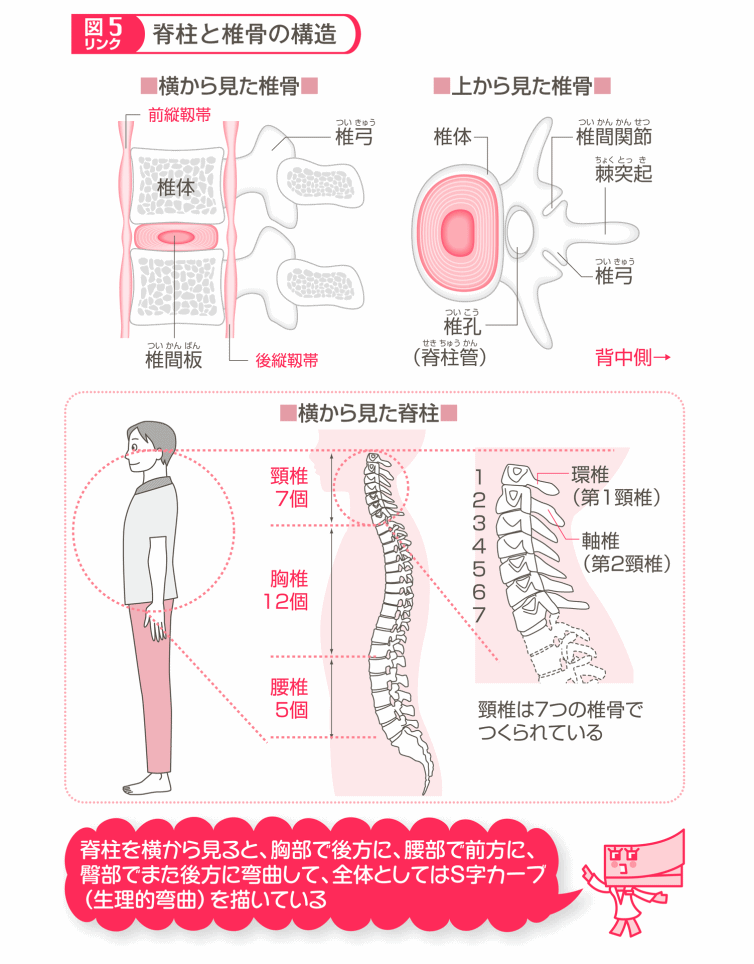
椎骨は円柱状の骨で、横断面を見ると楕円形の椎体が腹側にあり、背側には椎 弓 が伸び、中枢神経である脊 髄 の通り道になっている椎 孔 （脊柱管）があります。その背後に棘 突 起 が出ています。
脊柱は、横からみると頸部は前方に弯 曲 してます。胸部では後方に、腰部で前方に、臀 部 でまた後方に弯曲して、全体としてはS字カーブ（生理的弯曲）を描いています。
脊柱は、生まれたときから生理的弯曲を描いているわけではなく、ハイハイをしている赤ちゃん時代は4本足で歩く動物の脊柱に近い形状をしています。それが、成長とともにS字のカーブを描く生理的弯曲に変化します。
また、この生理的弯曲は、頭部の重み、立位や座位の上半身の重みを分散する働きも担っています。さらに、歩いたり走ったりしたときに、脚から伝わる衝撃を、生理的弯曲が吸収し、脳に障害が起きないようにしています。
脊柱のなかでも、肩こりに深く関係するのが7つの椎骨で構成されている頸椎です。
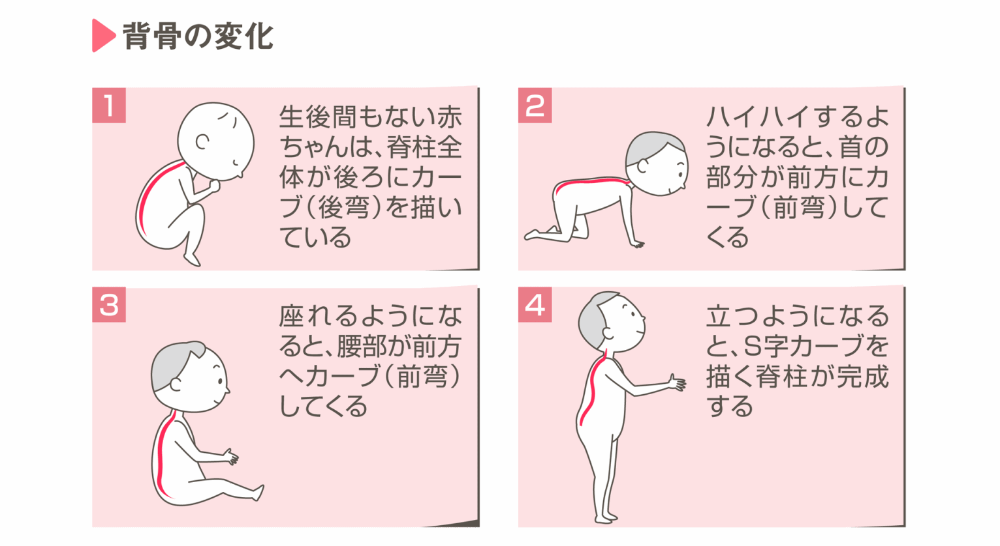
私たちは日常生活において、食事をしたり、周囲の様子を確認したりと、意識するしないに関わらず首を上下左右によく動かしています。首はとても可動範囲が広い部位です。具体的には、前方に約60度、後方に50度、左右に横倒しするときにも約50度の可動範囲があり、頭部を起こしたまま左右に約70度ねじることができます。
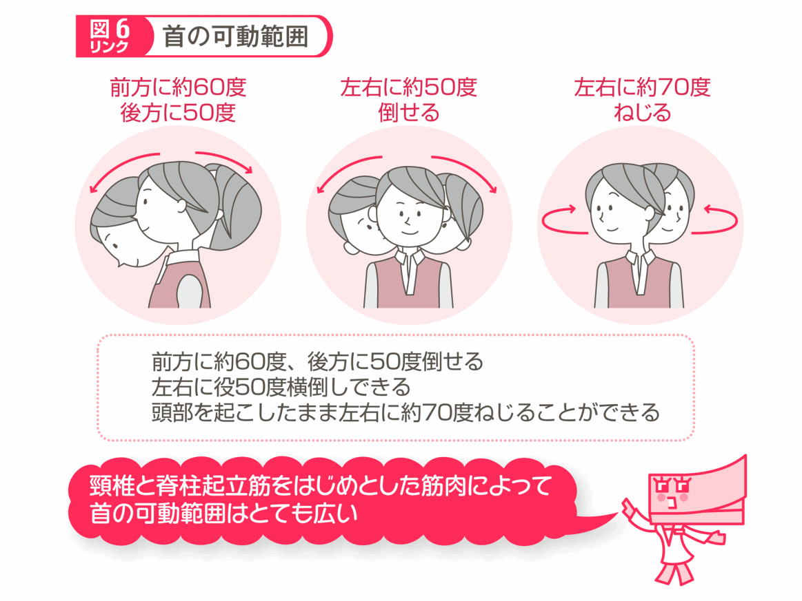
頭部には、外部の情報を収集する視 覚 、聴 覚 、嗅 覚 といった ＊ 感覚器官 が集中しています。それらの器官をいろいろな方向に向けて、情報をキャッチしようとしているのです。
首の自在な動きを可能にしているのが頸椎です。7つの椎骨が連なってじゃばらのような役割を果たすことで、可動範囲を広げています。さらに首を動かすときの負担を、7つの椎骨に分散しているのです。
頸椎と並んで重要なはたらきをしているのが、首周辺の筋肉群、とくに首の後ろにある「脊柱起立筋」です。
脊柱起立筋は、普段は頭部を起こし、必要な方向に向きを変え、その体勢を保つはたらきを担います。
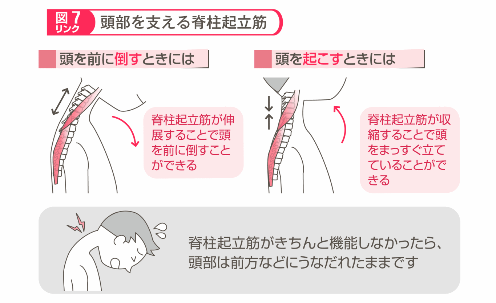
例えば、下を見ようと頭部を前に倒すときには、脊柱起立筋が適度に伸び、必要以上に倒れないようにします。一方、頭部を起こすときには、この筋肉が収縮して上に引っ張り上げてくれます。
脊柱起立筋がなければ、頭部をまっすぐに保ったり、倒した頭部を引き起こすこともできなくなってしまいます。
頭部の重量は、成人で約6～7kgもあります。Lサイズのスイカを想像してみてください。常にこの重量を支え、さらに倒したり、引き上げたりするのですから、脊柱起立筋に相当の負担がかかり、首という部位が疲労しやすいことがおわかりいただけると思います。
椎骨が連なることで頸椎などの脊柱を形成しているといいましたが、固い椎骨と椎骨が直接接していると、動かすたびにこすれ合いすり減ってしまいます。これを防ぐために、椎骨と椎骨の間には椎間板があります。
椎間板は、 ＊ 軟骨組織 でできていて頸椎から腰椎までのすべての椎骨の間にあり、重みや衝撃を吸収するクッションの役割を果たすと同時に、椎骨、脊柱起立筋と協力して首のなめらかな動きをつくり出しています。
椎間板の中央部は髄 核 といって、弾力性のあるゲル状の物質でできています。髄核のまわりを線 維 輪 という丈夫な組織が幾重にも取り囲んで、全体として弾力のある組織になっています。
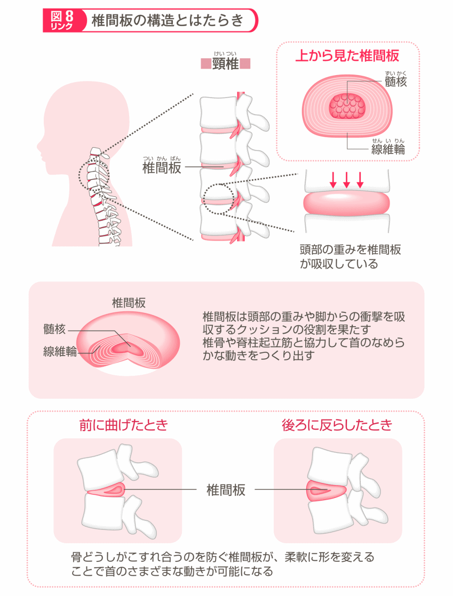
首を前後左右に曲げたときには、弾力性のある椎間板が柔軟に形を変えスムーズな動きを助けます。そして、首をまっすぐにするともとに戻ります。頭部の重みを吸収するクッションとしても重要な役割を果たしています。
まとめ
頭部を支え、滑らかな首の動きつくる頸椎のしくみ
■脊柱はからだを支え、衝撃吸収するための「生理的弯曲」といわれるS字カーブを描いている
■7つの椎骨で構成される頸椎によって、前後左右への首の可動範囲がとても広くなっている
■頸椎に隣接してある脊柱起立筋は、頭部の重みを支え、首の動きをスムーズにしている
■椎骨と椎骨の間にある椎間板は、頭部の重みや脚からの衝撃を吸収する役割を果たしている
肩は、もっとも可動範囲が広い関節で、上下、前後、左右、回転と複雑な動きができます。こうした動きを可能にしているのが、肩関節の構造と肩や背中の筋肉です。
肩は、主に肩 甲 骨 、上 腕 骨 、鎖 骨 で構成されています。それらの骨と周辺の骨によって、肩は肋 骨 関節、胸 鎖 関節、肩 鎖 関節、肩 峰 下 関節、肩 甲 上 腕 関節、胸 肋 関節、肩 甲 胸 郭 関節という7つの関節で構成されています。
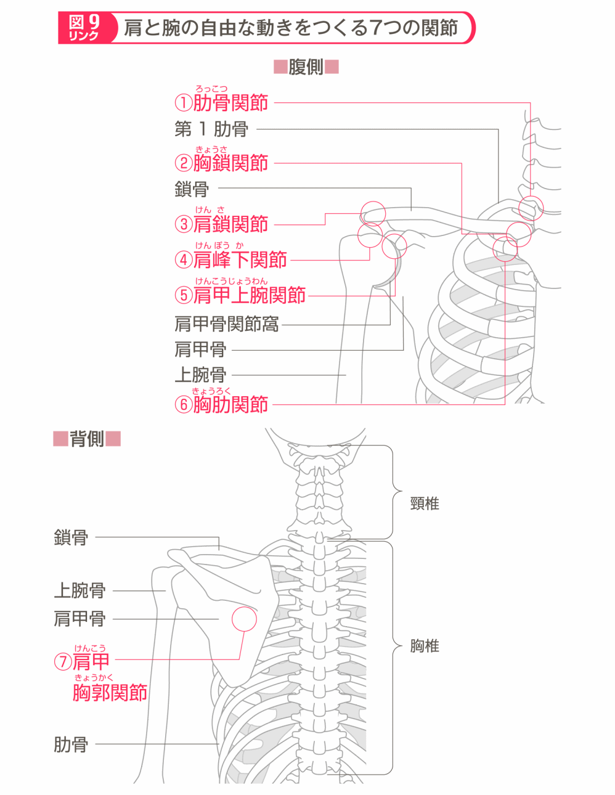
こうした関節の構造を多関節といいますが、多関節の構造によって肩は可動範囲が広く、肩や腕の自由な動きが可能になっているのです。
一般に肩関節といわれているのは肩甲上腕関節です。この関節は、背中の上部に左右にひとつずつある「肩甲骨」と、二の腕の「上腕骨」で形成され、2つの骨の接し方から"球関節"と呼ばれます。球形をした上腕骨の骨頭が、肩甲骨の外側にある浅いくぼみ（肩甲骨関節窩 ）にはまり込んで結合しています。この組み合わせによって、バリエーションに富んだ動きを可能にしています。
可動範囲が広い一方で、肩関節は肩甲骨関節窩が浅いために、上腕骨が外れて脱 臼 を起こしやすいというデメリットがあります。
肩関節には、体重の約8分の1の重量がある左右の腕がぶら下がっています。横になっているとき以外のほとんどの時間は、この負荷が肩関節にかかっているといえます。
首、肩、背中周辺の主な ＊ 骨格筋 （骨格と連動した筋肉）には、首の後ろから肩甲骨全体を覆う僧 帽 筋 、耳の下から鎖骨に伸びる胸 鎖 乳 突 筋 、肩関節を包む三 角 筋 、背中から腰、わきを覆う広 背 筋 などがあります。さらに上腕には、肩関節につながる上 腕 二 頭 筋 があります。
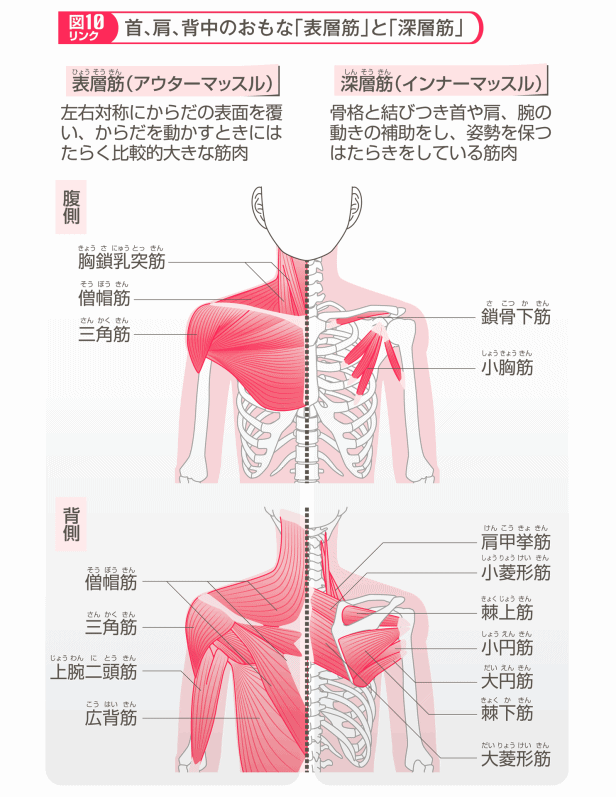
これらの骨格筋は、左右対称に体の表面を覆 うようにあることから「表 層 筋 （アウターマッスル）」と呼ばれています。
表層筋の下には、「深 層 筋 （インナーマッスル）」と呼ばれる筋肉があります。
僧帽筋の下にある大 ・小 菱 形 筋 は、肩甲骨とつながり内側に引き寄せる役割を担っています。また、首の側面から肩に伸びる肩 甲 挙 筋 は、肩甲骨を持ち上げるはたらきに加えて、頭部の重みを脊 柱 起 立 筋 とともに支えています。
収縮反応が早くからだをなめらかに動かすことのできる表層筋に対して、深層筋は持久力が高く姿勢を保つのに役立ちます。そして、表層筋のサポートをする影の力持ちです。深層筋に負担がかかると、これをカバーするために表層筋にも負担がかかります。
例えば、パソコン作業や、長時間ドライブであまり動かさないでいると、肩甲挙筋などの深層筋が緊張し続けて疲労を起こし、次に表層筋である僧帽筋に負担がかかります。
まとめ
肩周辺の筋肉の疲労が肩こりの原因に
■肩を中心としたさまざまな動きは、肩関節（肩甲上腕関節）をはじめとした、肩周辺の7つの関節が協力し合って可能になる
■首、肩、背中の骨格の複雑で自由な動きは、僧帽筋や三角筋などの筋肉（骨格筋）がコントロールしている
■骨格筋には、体の表面にある比較的大きな「表面筋」と、その下にある「深層筋」がある
■深層筋は、首や肩、腕の動きをつくり出すとともに、姿勢を保つはたらきをしている
難解用語解説
心筋梗塞
冠動脈の動脈硬化によって心筋（心臓の筋肉）への酸素の供給が途絶え、酸素不足の状態が続いた心筋が壊 死 を引き起こし、心筋の収縮機能に障害を生じる病態をいいます。急性の場合は、発症後数時間以内に不整脈などで死亡する例が多く、早急に集中治療を行う必要があります。好発年齢は50～60代で、女性よりも男性に多く発生します。
狭心症
心筋に一時的に血液が送られなくなり、胸が締めつけられるような強烈な痛みに襲われる状態をいいます。原因は、動脈硬化による血液供給の不足やれん縮などです。心筋梗塞と同様に50～60代の男性に多く発症します。
感覚器官
外部からの刺激を受け取る受容器としてはたらく器官をいいます。人間の場合、眼（視覚）、耳（聴覚）、鼻（嗅覚）、舌（味覚）、皮膚（触覚）などが感覚器官にあたります。これらの感覚器で集められた情報（刺激）は、中枢神経系へと伝えられて物の形や音、におい、味などとして認識されます。
軟骨組織
硬骨とともに私たちの体の骨格を形成しています。骨よりもやわらかく、弾力性があるのが特徴です。軟骨組織は、軟骨細胞、軟骨基質、軟骨を包む軟骨膜で構成されています。軟骨基質はコラーゲンでできたゼリー状のもので、その中に軟骨細胞が埋め込まれています。
骨格筋
腕や足、胴体などの骨格に付着して、骨格を動かすはたらきをする筋肉のことです。骨格筋を構成する筋肉は、自分の意志で動かすことができる随意筋で、太い筋肉と細い筋肉の２種類の筋肉が交互に並んで束をつくっています。
本書シリーズのご紹介
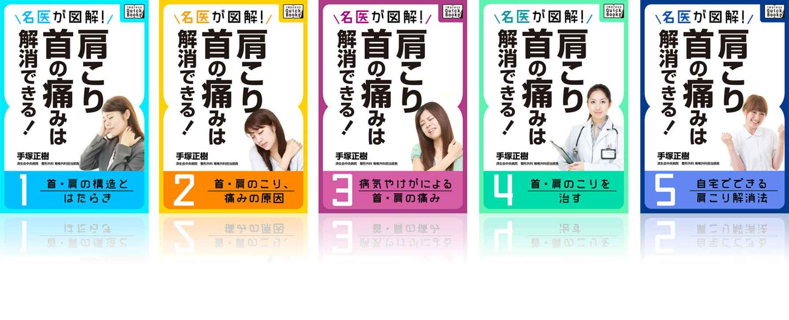
名医が図解!
肩こり・首の痛みは解消できる! (１)
首・肩の構造とはたらき
無料
多くの人にとって身近な症状"首の痛みや肩こり"。それは私たちのからだの骨格や筋肉の構造上、宿命ともいえる悩みです。首の痛みや肩こりを起こしやすいからだの構造を中心に解説していきます。
名医が図解!
肩こり・首の痛みは解消できる! (２)
首・肩のこり、痛みの原因
首や肩周辺のこりや痛みを引き起こす原因の多くが、生活習慣と関係しています。こうした不快な症状を解消するには、生活習慣の見直しと改善が必要です。首・肩周辺のこりや痛みの原因と、発症メカニズムについて解説していきます。
名医が図解!
肩こり・首の痛みは解消できる! (３)
病気やけがによる首・肩の痛み
肩こりをはじめとした首・肩周辺のこりや痛みは、血行不良による筋肉疲労であることが多いのですが、なかにはほかの病気の症状のひとつとして肩のこりや痛みがあらわれることもあります。何らかの病気による肩こりや痛みについて解説し、その対策について述べていきます。
名医が図解!
肩こり・首の痛みは解消できる! (４)
首・肩のこりを治す
肩こりを予防したり、解消するには、姿勢の悪さや運動不足、過度のストレスなどの生活習慣を改善する必要があります。日常生活や仕事での正しい姿勢の基本、適度な運動、栄養バランスのとれた食生活を解説していきます。
名医が図解!
肩こり・首の痛みは解消できる! (５)
自宅でできる肩こり解消法
肩のこりや痛みは、肩周辺の筋肉疲労、血行障害、筋力の低下などが強く影響します。原因を根本から解消するための、家庭やオフィスでできる温熱療法やマッサージ、ストレッチ、筋力トレーニング、ツボ指圧などを紹介します。
監修者
手塚正樹（てづか・まさき）
東京都済生会中央病院整形外科脊椎外科担当部長、慶応義塾大学整形外科客員講師。
昭和57年慶応義塾大学医学部卒業。慶応義塾大学医学部整形外科学教室入局。
昭和63年慶応義塾大学医学部整形外科学教室助手。
平成10年東京済生会中央病院整形外科医長、15年同部長、21年同脊椎外科担当部長。
日本整形外科学会専門医、日本整形外科学会認定脊椎脊髄病医、日本脊椎脊髄病学会指定脊椎脊髄外科指導医。
名医が図解!
肩こり・首の痛みは解消できる! (１)
首・肩の構造とはたらき
発行日
平成27年6月15日
著者
手塚 正樹
発行
Impress Business Development LLC
東京都千代田区神田神保町1丁目105番地
(本の内容に関するお問い合わせ先)
quickbooks_info@impress.co.jp
販売
株式会社インプレス
Copyright © 2015 Masaki Teduka All rights reserved.
協力
株式会社法研
表紙
ａｉ
制作
株式会社デジタルディレクターズ